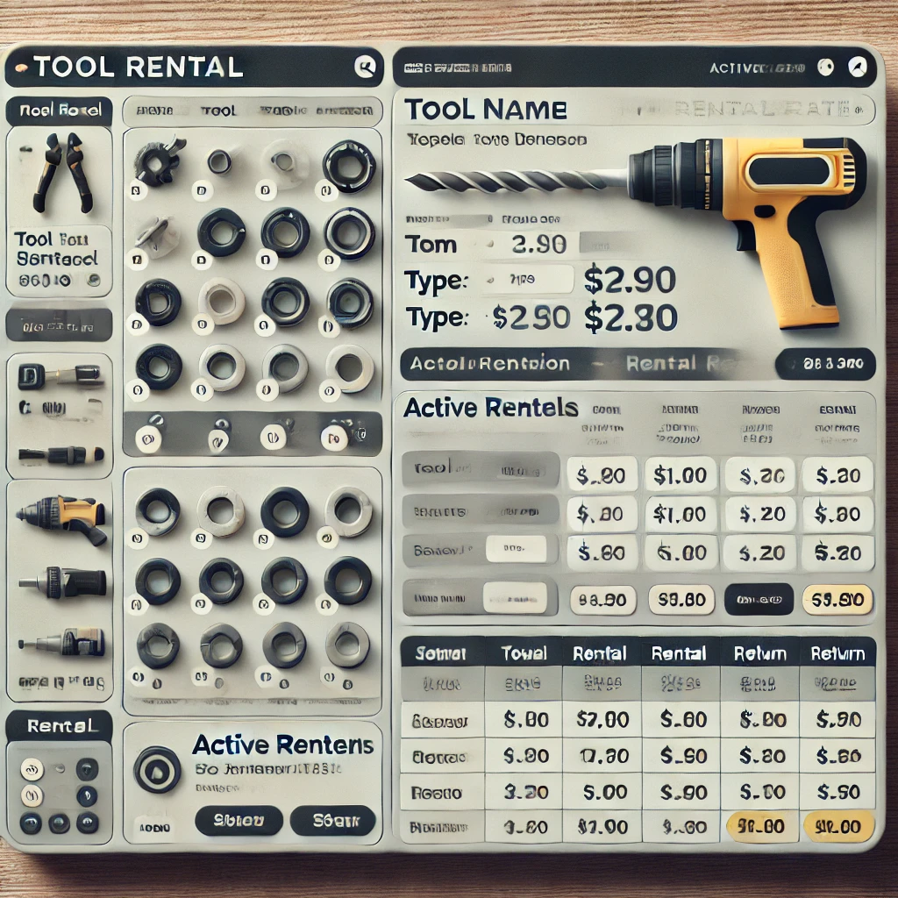

About Me
I am a passionate technologist with a strong foundation in Design and Verification of ASIC (Application Specific Integrated Circuit), now transitioning into the dynamic field of Python development. My journey began with a passion for technology, leading to a master’s degree in VLSI Design and a rewarding role as an R&D Engineer at Synopsys.
In my previous role, I specialized in verification of custom hardware systems - Wireless Modem(2G/3G/LTE) used in cellular phones and embedded Multi Media Chip(eMMC), which honed my skills in software development processes, quality control, and technical problem-solving.
After taking a career break to focus on family, I stayed engaged with the rapidly evolving tech landscape by pursuing online courses and hands-on projects. During the pandemic, I delved into data analytics and AI, gaining proficiency in Python programming and data analysis.
I have earned certifications such as the IBM Data Analyst Professional and IBM AI Developer Professional, demonstrating my adaptability and commitment to continuous learning.
My Technical Expertise
-
Python Development: Mastery of Python fundamentals, object-oriented programming (OOP), and data structures.
-
Web Development: Proficiency in Flask for back-end development, with basic skills in HTML and CSS.
-
Data Handling: Experience in analyzing and manipulating data using Pandas and NumPy, along with SQL for database operations.
-
Version Control and Testing: Proficiency in Git for collaboration and creating unit tests with
unittest.
-
API Integration: Understanding of RESTful APIs to build and integrate web services.
-
Deployment: Knowledge of deploying applications on platforms like Heroku.
I am eager to join a dynamic software development team where I can combine my analytical mindset, problem-solving abilities, and passion for innovation. Explore my portfolio to see how my journey, skills, and projects come together to deliver impactful solutions!
Simple e-commerce web application
This project is a simple e-commerce web application built with Flask, SQLAlchemy, and Bootstrap for a responsive and dynamic user interface. It features an intuitive product catalog, secure user authentication, an interactive shopping cart, and an admin panel for managing products and orders.
An Emotion Detection app uses natural language processing (NLP) to analyze user text inputs and identify emotional tones, such as joy, sadness, anger, fear, and disgust. By leveraging IBM Watson's NLP capabilities, the app can process text to extract these emotions, providing insights into the underlying sentiment or mood of the text.
Emerging Skills in Technology

In this Data Analysis project, the goal is to identify top in-demand programming skills for the current year by collecting data from job postings, training platforms, and surveys. The project started by gathering data on programming languages, database skills, and popular IDEs from online sources via web scraping and API access, storing data in formats like .csv, Excel, and databases. Data wrangling techniques prepared the dataset for analysis, followed by statistical analysis to uncover trends and insights. Finally, IBM Cognos Analytics is used to build a dashboard to convey the story behind the data.
Real Estate Market Price Prediction Project
This Real Estate Market Price Prediction project involves developing a data-driven model to estimate residential property prices using historical housing data from King County, Seattle. Key project stages included data cleaning, exploratory data analysis (EDA), feature selection, model building, and evaluation. By analyzing features like square footage, bedrooms, bathrooms, and location, the project identified significant predictors of housing prices and developed a predictive model using techniques such as linear regression.
Chicago Public Data Analysis Project

The Chicago Socioeconomic, Public Schools, and Crime Data Analysis project involves analyzing diverse datasets related to socioeconomic factors, public school performance, and crime statistics in Chicago. Using SQL for data extraction and manipulation, the project identifies patterns and correlations between socioeconomic indicators, school performance, and crime rates across different neighborhoods. The project showcases skills in data cleaning, aggregation, and advanced SQL querying, as well as the ability to draw meaningful conclusions from complex datasets.
The Math Mastery Quiz App is an interactive Python-based application built with Tkinter. It presents users with a variety of math problems (matching my daughter's grade level), including four-digit addition and subtraction, three-digit multiplication, and fraction operations (addition, subtraction, multiplication). The app generates random questions, displays them in a table, and allows users to select and answer each problem in a guided format. The app provides immediate feedback on accuracy, a running score, and a final message upon quiz completion, making it an engaging tool for learning and practicing math skills.
The Family Routine Tracker is a Python application developed with Tkinter, Excel, and matplotlib, designed to streamline daily routines for my family. It allows each family member to log unique activities, automatically tracks progress, and generates activity reports, making it easy to monitor and adjust routines dynamically. The app features a user-friendly interface and visually engaging reports, supporting effective family time management and organization.
A Simple Tool Rental Project

The Tool Rental System is a Python application designed to manage tool rentals efficiently. Users can browse available tools, view details, and rent tools for specific time frames. The system keeps track of rental durations, calculates costs based on usage, and provides a streamlined interface for tracking rentals and returns. This project was done to demonstrate the effectiveness of OOPS in programming.
The Personal Expense Tracker is a Python-based project designed to streamline expense management by extracting bank statement data directly from PDF files, using PyPDF2 and regex for data extraction. Leveraging pandas for analysis, it categorizes transactions and provides insights into monthly spending patterns. The project generates visualizations for clear monthly usage summaries and consolidates the analyzed data into an organized Excel file, enhancing personal finance tracking and budgeting.